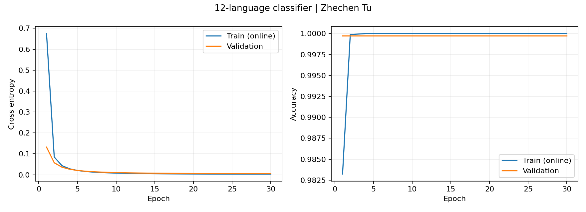
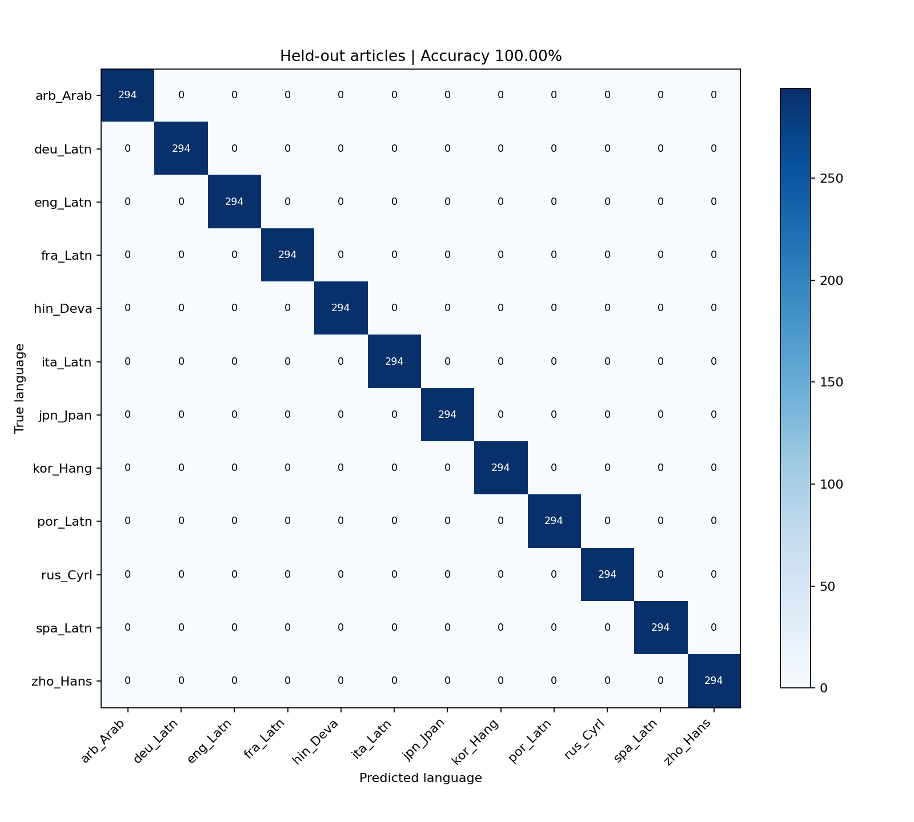

Zhechen Tu · PyTorch · 2026-10-29 · 实际训练结果报告
FLORES-200 真实文本，按来源文章划分；字符 TF-IDF + PyTorch Softmax 分类器。测试结果仅适用于本次语料。截取前 5 个字符时准确率降至 80.33%。

Week 03 | Zhechen Tu | 12-language text classification
PyTorch 2.6.0 | CPU | seed=20261029
Train=16992 | Validation=3564 | Features=30000 | Classes=12
Initial validation: loss=2.48529, accuracy=9.1470%
Epoch 01: train_loss=0.67461 train_acc=98.3227% val_loss=0.13220 val_acc=99.9719%
Epoch 02: train_loss=0.08484 train_acc=99.9882% val_loss=0.05747 val_acc=99.9719%
Epoch 03: train_loss=0.04357 train_acc=99.9941% val_loss=0.03640 val_acc=99.9719%
Epoch 04: train_loss=0.02840 train_acc=100.0000% val_loss=0.02641 val_acc=99.9719%
Epoch 05: train_loss=0.02063 train_acc=100.0000% val_loss=0.02076 val_acc=99.9719%
Epoch 06: train_loss=0.01600 train_acc=100.0000% val_loss=0.01712 val_acc=99.9719%
Epoch 07: train_loss=0.01296 train_acc=100.0000% val_loss=0.01469 val_acc=99.9719%
Epoch 08: train_loss=0.01084 train_acc=100.0000% val_loss=0.01289 val_acc=99.9719%
Epoch 09: train_loss=0.00931 train_acc=100.0000% val_loss=0.01152 val_acc=99.9719%
Epoch 10: train_loss=0.00814 train_acc=100.0000% val_loss=0.01050 val_acc=99.9719%
Epoch 11: train_loss=0.00725 train_acc=100.0000% val_loss=0.00965 val_acc=99.9719%
Epoch 12: train_loss=0.00654 train_acc=100.0000% val_loss=0.00898 val_acc=99.9719%
Epoch 13: train_loss=0.00596 train_acc=100.0000% val_loss=0.00842 val_acc=99.9719%
Epoch 14: train_loss=0.00550 train_acc=100.0000% val_loss=0.00797 val_acc=99.9719%
Epoch 15: train_loss=0.00512 train_acc=100.0000% val_loss=0.00759 val_acc=99.9719%
Epoch 16: train_loss=0.00480 train_acc=100.0000% val_loss=0.00727 val_acc=99.9719%
Epoch 17: train_loss=0.00454 train_acc=100.0000% val_loss=0.00700 val_acc=99.9719%
Epoch 18: train_loss=0.00432 train_acc=100.0000% val_loss=0.00677 val_acc=99.9719%
Epoch 19: train_loss=0.00413 train_acc=100.0000% val_loss=0.00658 val_acc=99.9719%
Epoch 20: train_loss=0.00397 train_acc=100.0000% val_loss=0.00642 val_acc=99.9719%
Epoch 21: train_loss=0.00384 train_acc=100.0000% val_loss=0.00628 val_acc=99.9719%
Epoch 22: train_loss=0.00374 train_acc=100.0000% val_loss=0.00617 val_acc=99.9719%
Epoch 23: train_loss=0.00365 train_acc=100.0000% val_loss=0.00608 val_acc=99.9719%
Epoch 24: train_loss=0.00358 train_acc=100.0000% val_loss=0.00601 val_acc=99.9719%
Epoch 25: train_loss=0.00352 train_acc=100.0000% val_loss=0.00595 val_acc=99.9719%
Epoch 26: train_loss=0.00348 train_acc=100.0000% val_loss=0.00591 val_acc=99.9719%
Epoch 27: train_loss=0.00344 train_acc=100.0000% val_loss=0.00588 val_acc=99.9719%
Epoch 28: train_loss=0.00342 train_acc=100.0000% val_loss=0.00586 val_acc=99.9719%
Epoch 29: train_loss=0.00341 train_acc=100.0000% val_loss=0.00584 val_acc=99.9719%
Epoch 30: train_loss=0.00340 train_acc=100.0000% val_loss=0.00584 val_acc=99.9719%
Best validation checkpoint: epoch 30
TEST accuracy=100.0000% (3528/3528) | macro_F1=1.000000
Test errors=0 | balanced chance baseline=8.3333%
precision recall f1-score support
arb_Arab 1.0000 1.0000 1.0000 294
deu_Latn 1.0000 1.0000 1.0000 294
eng_Latn 1.0000 1.0000 1.0000 294
fra_Latn 1.0000 1.0000 1.0000 294
hin_Deva 1.0000 1.0000 1.0000 294
ita_Latn 1.0000 1.0000 1.0000 294
jpn_Jpan 1.0000 1.0000 1.0000 294
kor_Hang 1.0000 1.0000 1.0000 294
por_Latn 1.0000 1.0000 1.0000 294
rus_Cyrl 1.0000 1.0000 1.0000 294
spa_Latn 1.0000 1.0000 1.0000 294
zho_Hans 1.0000 1.0000 1.0000 294
accuracy 1.0000 3528
macro avg 1.0000 1.0000 1.0000 3528
weighted avg 1.0000 1.0000 1.0000 3528
PASS: all 12 classes balanced; no shared articles, aligned sentence IDs, or normalized duplicate text. PASS: reloaded weights reproduce test metrics: 100.0000%; predictions match error log. PASS: empty and non-linguistic inputs rejected. Diagnostic: first 5 characters accuracy=80.3288% Diagnostic: first 10 characters accuracy=87.7834% Diagnostic: first 20 characters accuracy=95.7483% Illustrative handwritten examples: 12/12 correct (not a statistical test set). ALL ARTIFACT CHECKS PASSED
